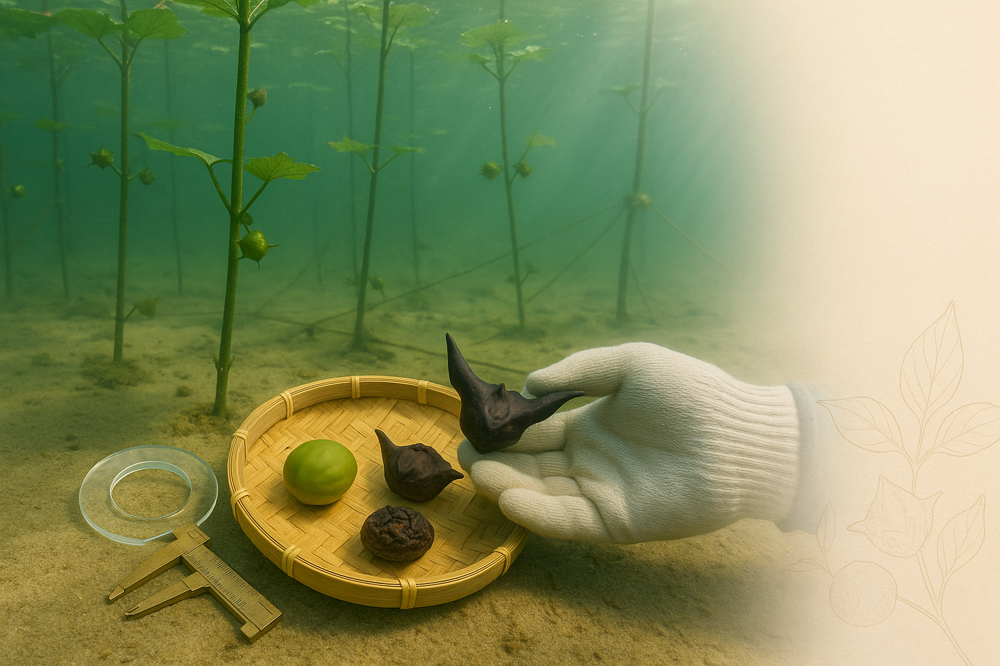

品質辨識重點
冷凍菱角仁的品質辨識要點，幫助您選購到最優質的產品！
看顏色
優質菱角仁呈現自然的乳白色或淡黃色，顏色均勻。避免選擇顏色過深或有黑斑的產品。
看顆粒
顆粒應該飽滿完整，大小均勻。破碎或不完整的顆粒較少，代表品質較好。
檢查冰晶
包裝內冰晶較少表示保存良好。過多冰晶可能代表曾經解凍再冷凍，影響品質。
檢查包裝
包裝應完整密封，無破損。確認效期標示清楚，選擇較新鮮的批次。
正確解凍方法
建議方法
- 冷藏解凍：前一晚放冰箱冷藏室自然解凍
- 流水解凍：密封袋裝好，用流動冷水解凍
- 直接烹調：煮湯時可直接下鍋，無需解凍
- 微波解凍：使用微波爐解凍功能，注意時間
避免方法
- 室溫長時間解凍（容易滋生細菌）
- 熱水浸泡解凍（破壞口感）
- 反覆解凍冷凍（影響品質）
- 解凍後長時間放置（應盡快烹調）
保存方法
冷凍保存要點
- 保持冷凍： 收到商品後立即放入冷凍庫（-18°C以下），保持冷凍狀態。
- 密封保存： 開封後未用完的菱角仁，應密封好再放回冷凍庫，避免冰箱異味影響。
- 分裝保存： 建議依每次使用量分裝，避免反覆解凍影響品質。
- 注意效期： 冷凍保存可達12個月，但建議在6個月內食用完畢，風味最佳。
烹調建議
◆ 菱角排骨湯： 菱角仁與排骨一起燉煮，湯頭鮮甜，菱角綿密，是秋冬進補的最佳選擇。
◆ 菱角燴鮮菇： 菱角搭配各式菇類快炒或燴煮，口感豐富，營養滿分。
◆ 蜜汁菱角： 將菱角煮熟後加入蜂蜜或糖調味，是傳統的甜點小吃。
◆ 其他料理： 菱角也適合加入咖哩、炒飯、炒麵等料理中，增添口感和營養。